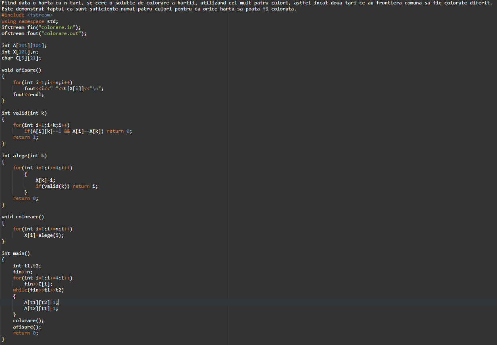
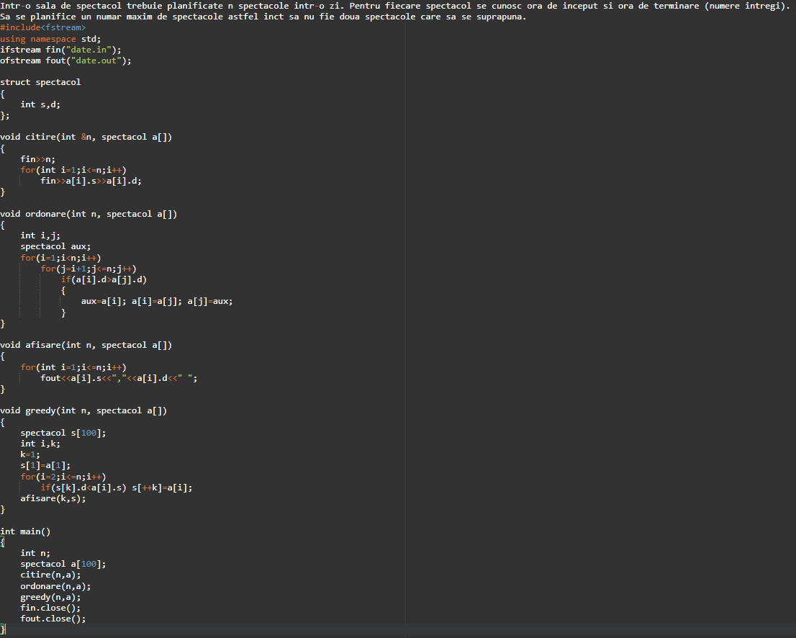
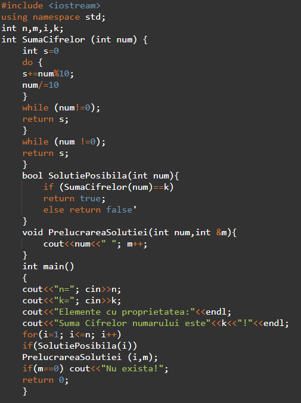

Se da o multime a cu n elemente si se cere sa se determine o submultime a sa (B) care satisface anumite restrictii. Aceasta submultime se numeste solutie posibila. Se cere sa se determine o solutie posibila care fie sa maximizeze fie sa minimizeze o anumita funtie obiectiv data. Aceasta solutie posibila se numeste solutie optima.
|  |  |  |